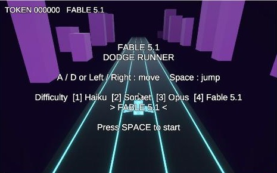
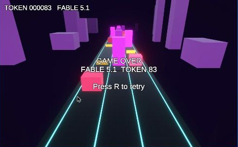
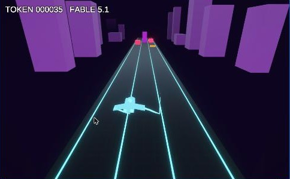

空のリポジトリから 1 時間で Unity ゲームを作って GitHub Pages に公開するまで
Claude Code (Fable 5.1) × Unity 6 × 公式 Unity CLI
game/ に隔離SceneBuilder.Build() で生成
~/.unity/bin/unity）com.unity.pipeline を入れると起動中の Editor が コマンド受付口になるunity@unity-agent-plugin（29 スキル）unity projects create DodgeRunner --template com.unity.template.urp-blank unity pipeline install --project-path game && unity open game unity command eval 'DodgeRunner.EditorTools.SceneBuilder.Build(); return "ok";' unity command editor_play && unity command screenshot --output shot.png unity build game --target WebGL --execute-method DodgeRunner.EditorTools.Builder.BuildWebGL
recompile → eval でシーン再生成editor_play → eval で StartGame() → 状態を文字列で読むscreenshot を AI が見て、見た目のズレを直すLogs/Editor.log を grep

宇宙船
Cube と Sphere 8 個を組み、翼端に TrailRenderer
床グリッド
256px テクスチャを SetPixel で生成して PNG 保存
スカイライン
発光ビル 24 棟をランダム生成して流す
Bloom / Vignette
VolumeProfile もコードで作成
脈動する障害物
MaterialPropertyBlock で発光を Sin 波
爆散
ParticleSystem を実行時に組み立てる
| 症状 | 原因 | 対処 |
|---|---|---|
| Chrome で 1 FPS | 影 + FXAA + 色収差 + Bloom | Bloom だけ残す |
| Pages で wasm が 404 | .gitignore の Build/ が dist/Build/ にも効く | /Build/ に修正 |
| タイトルの最終行が消える | uGUI Text の既定が Truncate | Overflow に変更 |
| スキル文書のフラグで失敗 | --caller を eval が拒否 | 実測を優先 |
just build-web && just dist → dist/ を commitdist/ を Pages にアップロードするだけ（アクションは SHA ピン）ゲーム: kexi.github.io/fable5.1-hackathon